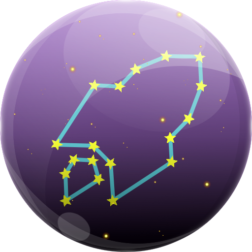

 Galactic Vision
Home
Activity
Quorum
Planetary Quorum
View All
{{ node.name }}
Go Back
Location:
Availability Rating (24 Hours):
Time Overloaded (24 Hours):
Trust Index:
Type:
Status:
Core Version:
Trusted
{{ getNodeName(validator) }}
Trusted By
{{ getNodeName(validator) }}